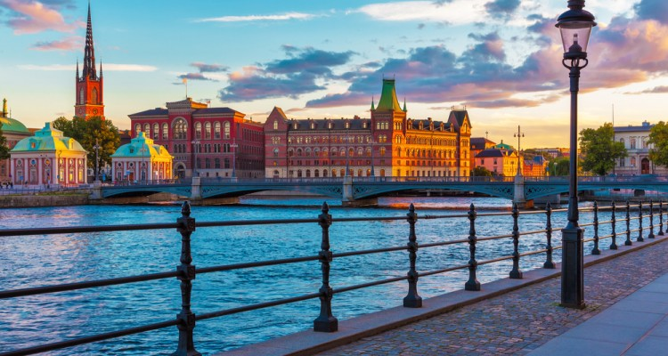
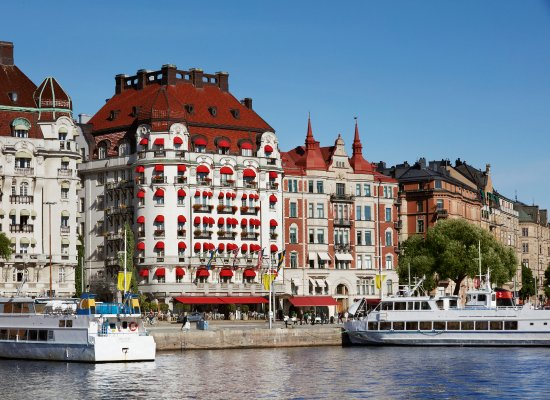
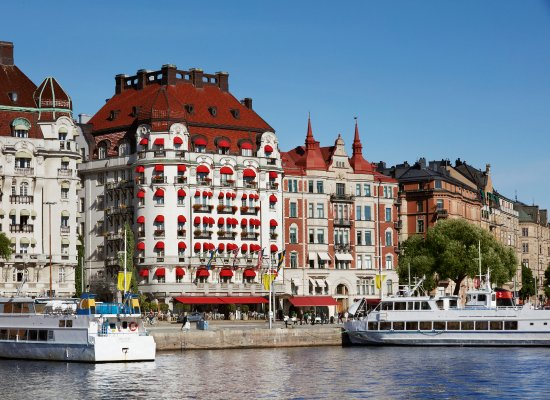

Stockholm
Welcome to Stockholm
Stockholm’s beauty and fashion sense could almost be intimidating. But get to know it better and there is little that is daunting about this top model city. Despite being spread across 14 islands, Stockholm's 57 bridges mean it is well-connected and essentially compact. Each neighbourhood has a distinct character, yet they’re close enough together you can easily spend time in several areas. In each, you'll find trend-setting design, inventive cuisine, unbeatable museums, great shopping, pretty parks and loads of atmosphere.
The old town, Gamla Stan, is a saffron-and-spice vision from the storybooks with one of Europe’s most arresting historic hubs with imposing palaces and razor-thin cobblestone streets. Just a few metres from this time capsule, the modern city centre shines like the pages of a magazine. Not the mention the city is surrounded by pristine forests and a vast archipelago. What’s not to love?
Top experiences
-
Kungliga Slottet
Kungliga Slottet was built on the ruins of Tre Kronor castle, which burned down in 1697. The north wing survived and was incorporated into the new building. Designed by court architect Nicodemus Tessin the Younger, it took 57 years to complete. Highlights include the decadent Karl XI Gallery, inspired by Versailles’ Hall of Mirrors and Queen Kristina’s silver throne in the Hall of State.
-
Vasamuseet
A good-humoured glorification of some dodgy calculations, Vasamuseet is the custom-built home of the massive warship Vasa; 69m long and 48.8m tall, it was the pride of the Swedish crown when it set off on its maiden voyage on 10 August 1628. Within minutes, the top-heavy vessel tipped and sank to the bottom of Saltsjön, along with many of the people on board.
-
Historiska Museet
The national historical collection awaits at this enthralling museum. From Iron Age skates and a Viking boat to medieval textiles and Renaissance triptychs, it spans over 10,000 years of Swedish culture and history. There's an exhibit about the medieval Battle of Gotland (1361), an excellent multimedia display on the Vikings, a room of breathtaking altarpieces from the Middle Ages, a vast textile collection and a section on prehistoric culture.
-
Moderna Museet
Moderna Museet is Stockholm’s modern-art maverick, its permanent collection ranging from paintings and sculptures to photography, video art and installations. Highlights include works by Pablo Picasso, Salvador Dalí, Andy Warhol, Damien Hirst and Robert Rauschenberg. There are important pieces by Francis Bacon, Marcel Duchamp and Matisse, as well as their Scandinavian contemporaries, plus work by lesser known contemporary artists.
-
Tantolunden
Located in southwest Södermalm, adjacent to trendy Hornstull, Tantolunden is one of Stockholm's most extensive and varied parks. Its combination of allotments, open expanses, outdoor gym, play area and waterside walks make it a great getaway from the city centre. Although the park becomes a focal point of the city in the summer with crowds flocking to swim and picnic, locals wind down with relaxing walks here throughout the year.
-
Skansen
The world’s first open-air museum, Skansen was founded in 1891 by Artur Hazelius to provide an insight into how Swedes once lived. You could easily spend a day here and not see it all. Around 150 traditional houses and other exhibits dot the hilltop – it’s meant to be ‘Sweden in miniature’, complete with villages, nature, commerce and industry. Note that prices and opening hours vary seasonally; check the website before you go.
-
Nobelmuseet
Nobelmuseet presents the history of the Nobel Prizes and their recipients, with a focus on the intellectual and cultural aspects of invention. It's a slick space with fascinating displays, including short films on the theme of creativity, interviews with laureates like Ernest Hemingway and Martin Luther King, and cafe chairs signed by the visiting prize recipients (flip them over to see!).
-
ABBA: The Museum
A sensory-overload experience that might appeal only to devoted Abba fans, this long-awaited and wildly hyped cathedral to the demigods of Swedish pop is almost aggressively entertaining. It's packed to the gills with memorabilia and interactivity -– every square inch has something new to look at, be it a glittering guitar, a vintage photo of Benny, Björn, Frida or Agnetha, a classic music video, an outlandish costume or a tour van from the band members' early days.
Discover the beauty of Stockholm



 
